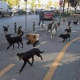
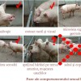

Dimineaţa în parcare, detectivul bucureştean nu stă cu faţa la soare, ci cu nasul sub maşină. “Oare mi-au tăiat furtunul de la rezervor ca să-mi fure benzină sau de data asta au luat doar oglinzile?”, se întreabă el testându-şi flerul şi experienţa. Dezlegarea misterului (da, au vrut benzina) îl conduce spre următoarea enigmă pe care [...]
Dacă porţi şosete albe sau trening, eşti automat descalificat. E fragmentul de text care ne-a atras atenţia citind regulamentul unui concurs intitulat „cel mai bine îmbrăcat bărbat din România”. Din start, organizatorii au eliminat trei sferturi dintre potenţialii concurenţi, cei rămaşi urmând să lupte pentru premii modice, în valoare de 300 de lei, dar mai [...]

Dan Diaconescu Direct, viitorul preşedinte al României, îşi conduce magistral Partidul Poporului (PP-DD) spre victoria electorală supremă. Prima victimă a OTV-istului şef a fost, aseară, călcată în picioare, umilită, batjocorită, dezonorată definitiv. Pentru a-şi apropia izbânda, Diaconescu s-a folosit de preşedintele Băsescu, de ciocoi, de verbul “a beli-belire” şi de o taxă oarecare, pretextul pentru atac. [...]

Somnul poliţistului român e profund şi inocent precum acela al unui sugar. Dacă s-ar analiza ce meserie trebuie să ai ca să dormi adânc şi neîntors, primele trei locuri ar fi ocupate de poliţişti de ordine publică, jandarmi şi gardieni publici. În cel mai luminat şi circulat loc din Capitală, Piaţa Unirii, nişte băieţi au [...]

Două oraşe din Norvegia şi unul elveţian sunt cele mai scumpe aşezări urbane din lume, conform unui studiu privind costul vieţii publicat la începutul anului 2012. Cercetarea, care a procesat peste 241.000 de preţuri şi a luat în calcul răspunsurile a 23.000 de oameni, a fost realizată de Numbeo.com şi include 258 de localităţi din [...]

1. Există riscul dovedit ca în primele luni de sarcină vreun doctor care şi-a luat Bac-ul „decât în toamnă” să-ţi confunde fătul cu pietrele la rinichi, că doar amândouă dau dureri, iar în final vei ajunge să naşti la toaletă, unde doctorul te trimite cu speranţa că vei elimina calculii renali. 2. Dacă obstetricianul nu [...]
Citind cum un robot experimental autonom american a realizat, în doar câteva zile, 50 de interviuri cu trecători, adunând material pentru un întreg reportaj, e imposibil să nu te întrebi ce s-ar întâmpla dacă Boxie, proiectul cercetătorilor de la Massachusetts Institute of Technology (MIT), ar fi transferat în România. Cunoscând cum funcţionează robotul şi ştiindu-ne [...]

Iată ce vor puştii anului 2012 să devină atunci când vor fi mari. Sau chiar mai repede de atât. Dat fiind că îşi tratează cu seriozitate aspiraţiile, ei sunt preocupaţi şi de unele detalii istorice mai tehnice: Ambele întrebări au fost puse pe site-ul TPU.ro, locul unde cele mai analfabete întrebări îşi găsesc răspunsuri stupide [...]

Tabloidizarea presei economice e constanta maladivă a ultimilor ani, răspunsul editorial neinspirat la scăderea pieţei de publicitate. Criza a devenit un fel de Elodia Ghinescu, iar titlurile publicaţiilor economice arată cam în halul următor: Ideea e simplă: cu cât ai un public mai speriat, cu atât ai şanse mai mari să-l menţii oferindu-i “expertiză”, sfaturi “preţioase” [...]

Imaginaţi-vă o versiune de carton a robotului Wall•e, personajul Pixar, dar adăugaţi-i o voce simpatică şi aveţi o imagine destul de corectă a lui Boxie, reporterul automatizat. Creat de cercetătorii de la Massachusetts Institute of Technology (MIT), „roboţelul” se plimbă pe străzi şi alege trecători la întâmplare, cerându-le să-i spună o poveste interesantă. „Ideea a [...]
Vierul depistator e animalul folosit exclusiv pentru identificarea scroafelor în călduri, acestuia fiindu-i complet interzisă reproducerea, pentru a-i păstra intactă capacitatea de detecţie. Vierul nu e castrat, deci nu e doar un porc liniştit ale cărui unice instincte ţin de golirea troacei. Nu, dimpotrivă, vierul încercător e mai viril chiar decât colegii mai norocoşi, folosiţi [...]
Revista online eva.ro, specializată în soft-porn SEO, îşi invită onorabilele cititoare să treacă la aparat taman în noaptea de Revelion. Pentru că publicul revistelor “de gen feminin” are nevoie de un ghid în n paşi inclusiv pentru tras apa fără meditator, redactorii Eva au născocit “8 trucuri speciale de sex oral pentru noaptea de Revelion”. [...]